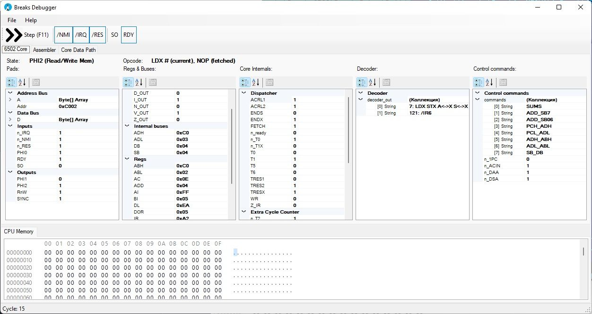
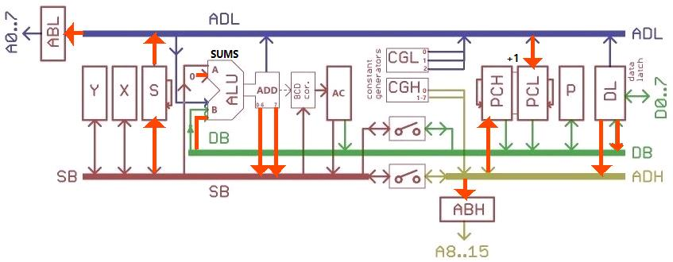
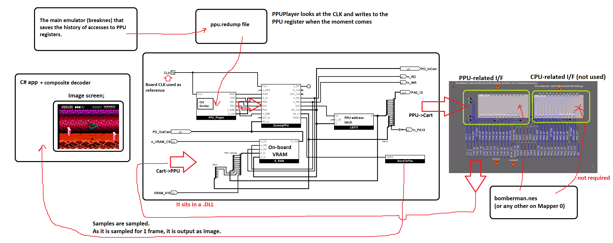
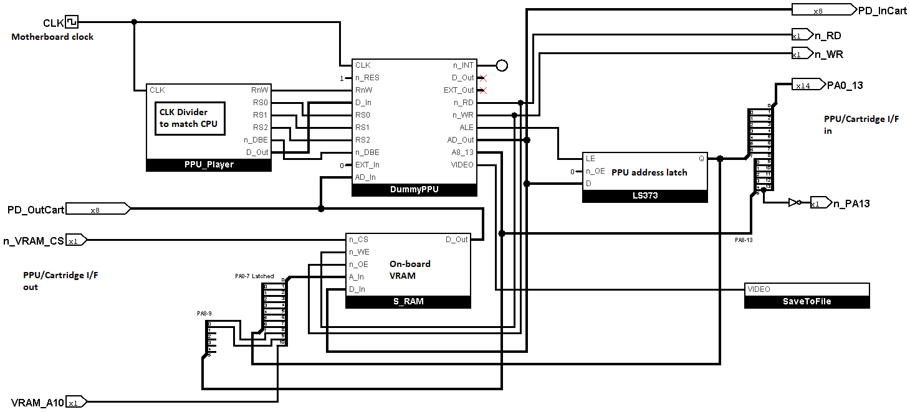
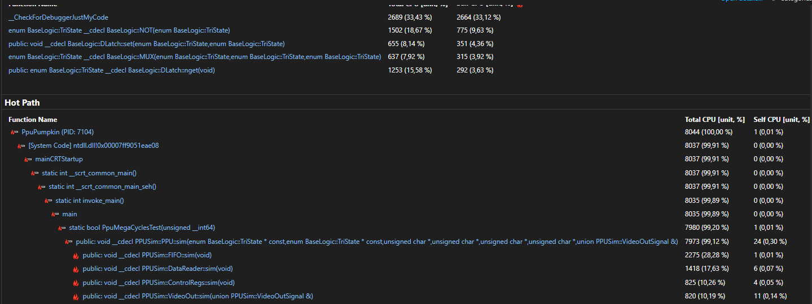
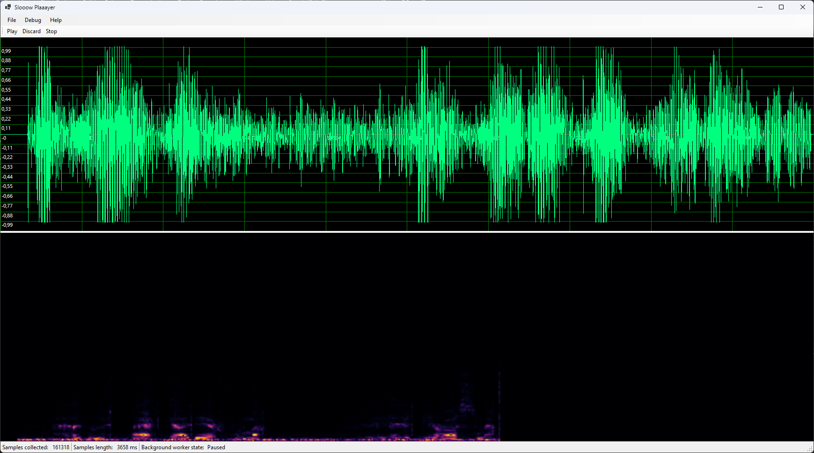
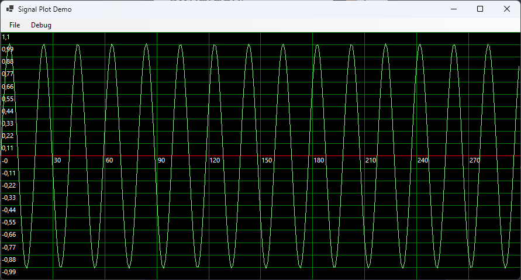
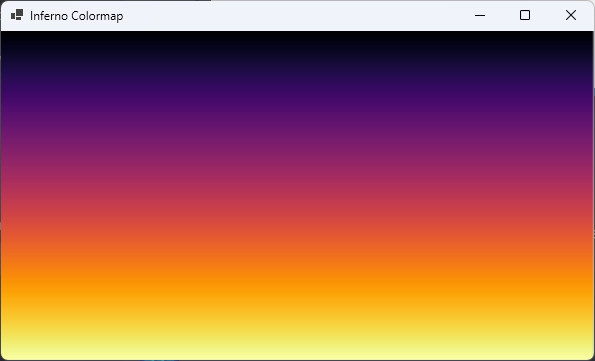

Утилиты вокруг эмулятора: от максимально простого ассемблера 6502 до инспектора ядра на уровне вентилей и плееров дампов регистров PPU/APU.
Эта страница описывает программы из папки Tools/ репозитория: ассемблер
Breakasm, которым отладчик собирает введённый исходник; Breaks Debugger —
GUI для проверки ядра 6502; инструменты воспроизведения PPU Player и
APU Player; демо профилирования скорости PpuPumpkin и
ApuPumpkin; утилиту воспроизведения аудио Slooow Plaaayer; а также
демо-программы SignalPlotDemo и InfernoColormap для самодельных
WinForms-контролов.
Breakasm
Ассемблер, настолько простой и «тупой», насколько это возможно, — чтобы генерировать код.
Для запуска:
Breakasm [-l <file.lst>] <source.asm> <output.prg>
Example: Breakasm -l test.lst test.asm test.prgОпция -l <file.lst> записывает листинг ассемблирования (адрес, сгенерированные байты и строку исходника) в указанный файл.
Есть также Python-порт с тем же поведением и той же командной строкой:
python breakasm.py [-l <file.lst>] <source.asm> <output.prg>PRG-файл всегда занимает 64 Кбайт (размер адресного пространства 6502). Текущий указатель ассемблирования (ORG) может быть установлен в любом месте PRG.
Синтаксис
Исходный текст разбивается на строки следующего формата:
[LABEL:] COMMAND [OPERAND1, OPERAND2, OPERAND3] ; CommentsМетка (LABEL) необязательна. Команда (COMMAND) — это инструкция 6502 или одна из директив ассемблера. Операнды зависят от команды.
Выражения
Все операнды вычисляются встроенным движком выражений. Метки, define-константы и сложные выражения поддерживаются на месте любого операнда:
LDA MyData + 32 * entry_size + 12
STA (Base << 4) | 1
BYTE Table + 2Поддерживаемые операции (от высшего приоритета к низшему):
() grouping
! ~ logical not, bitwise not (unary)
* / % multiply, divide, modulo
+ - add, subtract
<< >> shift left, shift right
<<< >>> rotate left, rotate right
> >= < <= comparisons (result: 0 or 1)
== != equality (result: 0 or 1)
& | ^ bitwise and, or, xorЧисла могут быть десятичными (12), шестнадцатеричными ($12, #$12) или двоичными — через define-константы. Непосредственный операнд начинается с # (LDA #5). Операнд, целиком заключённый в скобки, означает косвенную адресацию (JMP (addr)), тогда как скобки внутри выражения — только группировка.
Многопроходная сборка
Breakasm собирает исходник за несколько проходов, пока не будут разрешены все идентификаторы, метки и define-константы. Заодно снимается неоднозначность Zero Page / Absolute: если метка, на которую ссылаются вперёд, оказывается ниже $100, ассемблер автоматически использует более короткий опкод zero page (если только директива ABS не принуждает использовать абсолютный).
Встроенные директивы
| Директива | Описание |
|---|---|
| ORG | Устанавливает текущую позицию ассемблирования в PRG. |
| INCLUDE | Обрабатывает вложенный исходный файл |
| DEFINE | Определяет простую константу |
| BYTE | Выводит байт или строку |
| WORD | Выводит uint16_t в порядке little-endian. Можно использовать как числа, так и метки и адреса. |
| END | Завершает ассемблирование |
| PROCESSOR | Определяет тип процессора в информационных целях |
| ABS | Подсказка: следующая инструкция с неоднозначностью Zero Page / Absolute (адрес ниже $100) должна использовать абсолютный опкод |
Пример директивы ABS:
ABS
LDA $10 ; uses AD 10 00 (absolute), not A5 10 (zero page)
LDA $20 ; the hint is consumed by the previous instruction: A5 20 (zero page)Пример исходного кода
Чтобы не расписывать слишком много, я просто покажу пример исходного кода. Делайте так же — и всё заработает.
; Test program
LABEL1:
PROCESSOR 6502
; ORG $100
DEFINE KONST #5
LDX KONST
AGAIN:
NOP
LDA SOMEDATA, X ; Load some data
JSR ADDSOME ; Call sub
STA $12, X
CLC
BCC AGAIN ; Test branch logic
ADDSOME: ; Test ALU
ADC KONST
PHP ; Test flags in/out
PLP
RTS
ASL A
SOMEDATA:
BYTE 12, $FF, "Hello, world"
WORD AGAIN
ENDПоддержка NES и мапперов
Приделывать какие-то NES- и мапперные приблуды к обобщённому ассемблеру — плохая идея.
Соберите несколько PRG-файлов и, если нужно, сами скомпилируйте из них .nes-файл.
Breaks Debugger
Простой GUI для проверки работы компонента ядра 6502 (M6502Core).

PropertyGrid-ы показывают сигналы, регистры и остальную DebugInfo ядра 6502. Кнопки сверху — ручное управление соответствующими выводами. Вкладка CPU Memory показывает HexDump памяти. Вкладка Assembler показывает TextBox с исходником, который будет ассемблирован встроенным Breakasm и сразу загружен в память.
Breakasm и M6502Core находятся в соответствующих Interop DLL.
Сборка
Собирать нужно обязательно в конфигурации Debug/Release x86/x64. AnyCPU не подходит, потому что используется нативный код в Interop DLL.
Только не забудьте переключиться обратно на Any CPU, когда нужно редактировать формы. У Microsoft с этим проблема.
Также необходимо установить все пакеты через NuGet (см. packages.config).
Дамп состояния процессора для Wiki
Чтобы включить подробный дамп всех внутренностей прямо в Markdown и с картинками, нужно создать папку WikiMarkdown.
Состояние процессора будет дампиться каждые полтакта. Дамп включает состояние внутренностей в виде Markdown-таблицы и картинку того, что происходит в нижней части процессора (соединения регистров и внутренних шин).
Об этом:
JSR (0x20), T1 (PHI1)
| Компонент/Сигнал | Состояние |
|---|---|
| Dispatcher | T0: 0, /T0: 1, /T1X: 0, 0/IR: 1, FETCH: 0, /ready: 0, WR: 0, ACRL1: 0, ACRL2: 1, T5: 0, T6: 0, ENDS: 1, ENDX: 1, TRES1: 1, TRESX: 0 |
| Interrupts | /NMIP: 1, /IRQP: 1, RESP: 0, BRK6E: 0, BRK7: 1, DORES: 0, /DONMI: 1 |
| Extra Cycle Counter | T1: 1, TRES2: 1, /T2: 1, /T3: 1, /T4: 1, /T5: 1 |
| Decoder | 95: JSR (TX), 121: /IR6, 126: /IR7 |
| Commands | S_ADL, SB_S, DB_ADD, Z_ADD, SUMS, ADD_SB7, ADD_SB06, ADH_PCH, ADL_PCL, ADH_ABH, ADL_ABL, DL_ADH, DL_DB |
| ALU Carry In | 0 |
| DAA | 0 |
| DSA | 0 |
| Increment PC | 1 |
| Regs | |
| IR | 0x20 |
| PD | 0x00 |
| Y | 0x00 |
| X | 0x05 |
| S | 0x0E |
| AI | 0x00 |
| BI | 0xC0 |
| ADD | 0xFB |
| AC | 0x6C |
| PCL | 0x09 |
| PCH | 0xC0 |
| ABL | 0x0E |
| ABH | 0xC0 |
| DL | 0xC0 |
| DOR | 0xC0 |
| Flags | C: 1, Z: 0, I: 1, D: 0, B: 1, V: 0, N: 0 |
| Buses | |
| SB | 0xFB |
| DB | 0xC0 |
| ADL | 0x0E |
| ADH | 0xC0 |

UnitTest
Чтобы запустить отладчик в режиме юнит-теста, нужно создать JSON примерно такого вида:
{
"CompileFromSource": true,
"MemDumpInput": "mem.bin",
"AsmSource": "Test.asm",
"RunUntilBrk": true,
"RunCycleAmount": true,
"CycleMax": 10000,
"RunUntilPC": true,
"PC": "0x3469",
"TraceMemOps": false,
"TraceCLK": true,
"DumpMem": true,
"JsonResult": "res.json",
"MemDumpOutput": "mem2.bin"
}И запустить с параметром: BreaksDebugger Test.json.
В качестве входного кода можно использовать дамп памяти на 64 Кбайт (MemDumpInput) или исходник на языке ассемблера (AsmSource).
Симулятор будет работать, пока не встретит инструкцию BRK (RunUntilBrk) или не пройдёт указанное количество циклов (RunCycleAmount, CycleMax) — это циклы, а не полутакты.
На выходе — дамп памяти после симуляции (MemDumpOutput) и JSON с результатами симуляции (JsonResult).
PPU Player
Схема работы:


Как получить дампы регистров PPU
Можно использовать основной эмулятор (breaknes). В настройках нужно включить PPURegump=True и выбрать папку, куда будет сохраняться regdump.
Не забудьте выставить в настройках PPUPlayer правильный делитель CPU, соответствующий тому CPU, с которым получен regdump.
Формат записей regdump:
#pragma pack(push, 1)
struct RegDumpEntry
{
uint32_t clkDelta; // Delta of previous CLK counter (CPU Core clock cycles) value at the time of accessing to the register
uint8_t reg; // Register index + Flag (msb - 0: write, 1: read)
uint8_t value; // Written value. Not used for reading.
uint16_t padding; // Not used (yet?)
};
#pragma pack(pop)Тайминги CPU I/F
В этом разделе описывается, когда (и как долго) использовать CPU I/F для чтения/записи регистра PPU.
Технически ни одна инструкция загрузки/сохранения 6502 не может выполниться быстрее одного PCLK.
Поэтому мы принимаем допущение, что CPU I/F (сигнал /DBE и остальные) активен в течение всего такта PCLK (/PCLK + PCLK).
Если это не сработает, мы проведём дополнительные исследования, как сделать лучше.
EDIT: эта модель работает, если использовать корректный regdump, который правильно пишет в регистры PPU. Если писать в регистры PPU в неверный момент (например, не во время VBlank), могут появиться визуальные артефакты.
APU Player
Автор изображения — u/ThatPixelArtDude.
Как получить дампы регистров APU
Можно использовать основной эмулятор (breaknes). В настройках нужно включить APURegump=True и выбрать папку, куда будет сохраняться regdump.
Формат записей regdump:
#pragma pack(push, 1)
struct RegDumpEntry
{
uint32_t clkDelta; // Delta of previous CLK counter (CPU Core clock cycles) value at the time of accessing to the register
uint8_t reg; // Register index + Flag (msb - 0: write, 1: read)
uint8_t value; // Written value. Not used for reading.
uint16_t padding; // Not used (yet?)
};
#pragma pack(pop)PpuPumpkin
Демо для профилирования скорости PPUSim с целью его оптимизации.
PPU executed 21477272 cycles in real 20375 msec
You're 20.38 times slower :(
ApuPumpkin
Демо для профилирования скорости APUSim с целью его оптимизации.
APU+Core executed 21477272 cycles in real 63266 msec
You're 63.27 times slower :(Slooow Plaaayer

Утилита для проигрывания аудиосэмплов, полученных с медленного источника (например, APUSim).
Источники сэмплов:
- Отладочный вибрато-звук (меню Debug)
- Данные из .wav-файла
Принцип работы
Background Worker работает в фоне и собирает сэмплы из источника (SourceSamples) в промежуточный буфер (SampleBuf) с небольшой задержкой.
Раз в (реальную) секунду обновляется статистика и строится график сигнала.
Если сэмплы в источнике закончились, worker засыпает, пока не получит новый источник.
SignalPlotDemo

Демонстрация самодельного WinForms-контрола SignalPlotControl.
В меню можно выбрать два типа сигналов: нормализованный шум и синусоиду (вроде того).
InfernoColormap

Демо для проверки палитры inferno из Matplotlib (https://matplotlib.org/stable/gallery/color/colormap_reference.html)
TBD: сделать процедурную генерацию массива ints, потому что сейчас это выглядит уныло.